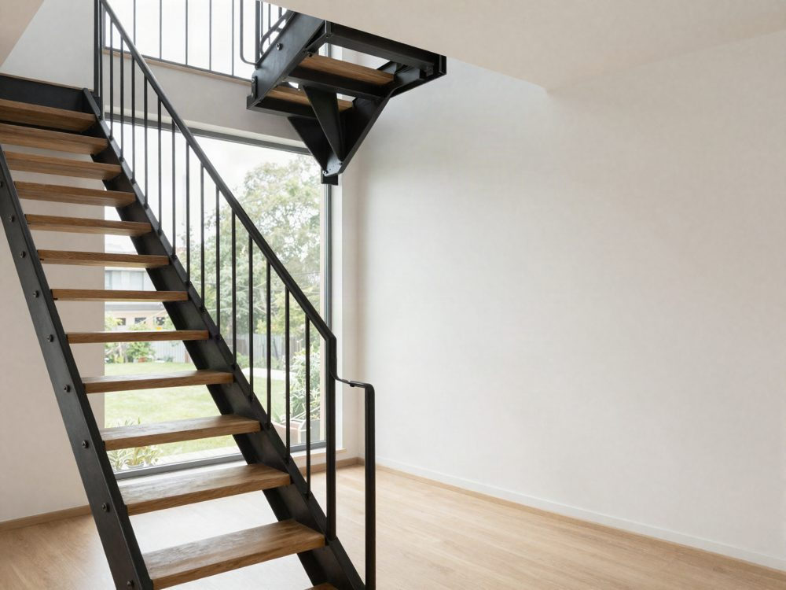

Chybí zadání a jasný cíl.
Projekt začne návrhem, ne otázkou, co má web pro firmu udělat. Hezký web bez zakázek.
Nejdřív se ptáme, co má projekt pro vaši firmu udělat. Pak navrhneme a postavíme web, aplikaci nebo vizuální identitu. Vlastně cokoliv, co je potřeba.
Projekt začne návrhem, ne otázkou, co má web pro firmu udělat. Hezký web bez zakázek.
Agentura na design, freelancer na kód, další firma na texty. Nikdo nedrží celek a rozhodnutí se ztrácejí mezi e-maily.
Každá nová stránka, jazyk nebo napojení je nový projekt. A po spuštění nikdo neměří, co lidé na webu dělají.
Klikněte na blikající místa. Každé rozhodnutí má za sebou data.
Posuňte dolů
Schodiště, Praha 6 · 2025+45 % poptávek po výměně stock fotky za skutečnou.Projdeme data, konkurenci a rozhovory s vámi i s vašimi zákazníky. Návrh pak stojí na faktech, ne na dojmech.
Výstup: cíle, cílové skupiny, priorityStruktura webu, rozsah, cena a termín. Od tohoto bodu přesně víte, co dostanete a kdy.
Výstup: zadání, rozpočet, harmonogramPrototyp si projdete jako hotový web a řekneme si, co změnit. Teprve potom ladíme vzhled do detailu. Vy schvalujete, my upravujeme.
Výstup: prototyp, vizuální návrh, textyWebflow, formuláře, CRM, měření. Průběžně vidíte, jak web roste. Obsah si po spuštění měníte sami.
Výstup: hotový web s obsahem a integracemiProjdeme web na všech zařízeních, spustíme ho a nastavíme měření. Pak sledujeme, co lidé na webu dělají, a web dál rozvíjíme.
Výstup: spuštění, měření, plán rozvojeWeb tohoto rozsahu obvykle stojí 60 až 150 tisíc Kč. Cenu a termín znáte po druhém týdnu, dřív než začneme navrhovat.

Nový web otevřel cestu na německý trh a ze zakázky se stala dlouhodobá spolupráce.

Z poptávky na logo vznikla celá vizuální identita: auta, oblečení, faktury i nový web.

Jednotný vizuální styl pro 500 lidí, 120 sjednocených výstupů a interní portál s návody.

Interní systém, který nahradil Google formuláře a vede techniky v terénu krok za krokem.
Na všechny projekty dohlíží Lukáš Svoboda, Digital Project Lead. Podle velikosti projektu přizveme specialisty, se kterými pracujeme dlouhodobě.